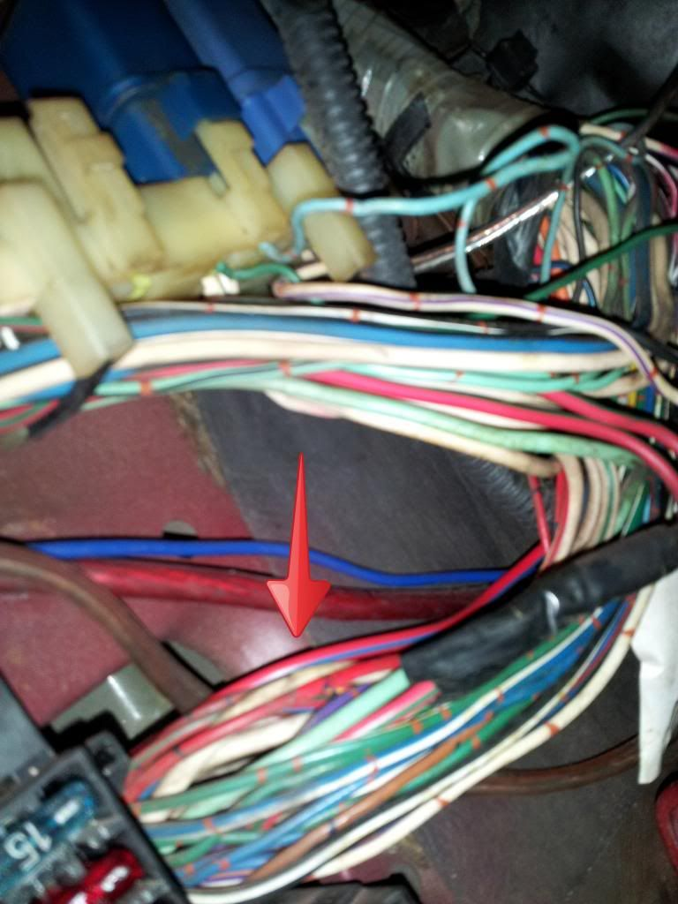
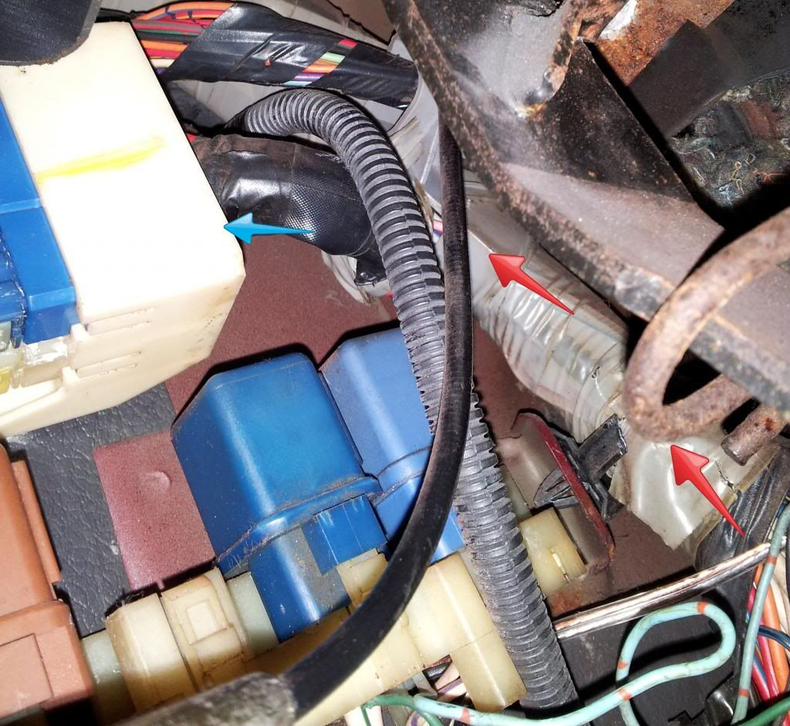

-
Ok. I have an electrical problem. Well, a few.
About a week ago, the headlights stopped going down. It was around bar exam time so I didn't have any time to diagnose the problem. After the bar, I took the car, during the day, up to visit parents. While there, I had their mechanic change the timing belt and water pump. On the way back, during night, I find out from my fiance that is following me in her car that none of my back lights are on. Brake lights worked, running lights did not. I know for a fact they had been working so this is a new thing to me. I also noticed on the way back that the lights behind the dash switches on each side of the dash were out and not working. Also, there is no chime when the lights are on and the door is opened.
So, here is what I have done to troubleshoot this…
I started with the fuses. Started going down the line in the fuse box kick panel on driver side and replacing fuses. When I replaced one, the "Clearance Illumini" one I believe, there was a chime and the headlights went down. Everything was better, so I thought. But now, the headlights do not go up, still no chime when they are turned on and the door is opened, and still no illumination on the switch panels or the taillights.
So, for the taillights, I heard it was the little box harness that could be the problem. Unfortunately the only ones they had at the junkyard was the white one and mine is an 87 and has a black box. I tried the white one anyways, didn't work. So then I tried to splice the wires together like I had seen to do on a couple other threads regarding the same problem on here, that didn't work either. I even tried replacing all the bulbs. I still had no running rear lights.
So I am thinking maybe a relay somewhere? It just seems that it would be one thing that is keeping power from going to these things. But then, when I replaced that fuse the headlights went down and won't come back up, so maybe the do have power to them??
So right now, as it sits, when I turn the headlights on they come on but stay down and nothing else comes on, no taillights, no side marker lights, and no lights behind the dash switches when the dash lights are on.
Just for more info as well, I know my headlight switch is bad and needs to be replaced. Sometime when I turn the headlights on only the driver side comes on and later the passenger one will come on. Also, putting them on bright just makes the passenger one work and the driver one go out. So I know the switch is bad, but I didn't think it would cause the headlights to not come up, the switches on the dash to not work, or the running lights to not come on. Hell, maybe now that I'm typing this it seems like it may control all that stuff!
But, let me know what you guys think as far as what to try tomorrow. Can't really drive it at night right now because of this. -
I have a good 87 headlight switch and black tail light box. PM with your zip for a price.
1988 300ZX Turbo, Shiro Special #760
1988 300ZX Turbo Automatic (wife's car)
1991 Hard-body 2WD
http://zccw.org/zccw/?page_id=1215 -
Pm'd -
What you described is the classic headlight switch problem. Just think, what puts the headlights up and down, what turns then on and off, what turns on the taillights and marker lights, what turns on the dash lights? Bitching Betty can't bitch without seeing the headlight switch in the on position. You see a common culprit yet? Rule #1 in troubleshooting 101 is, if you have multiple symptoms, look for a common reason. All of your symptoms happen when the light switch is turned on. Brake lights have nothing to do with the headlight switch (brake pedal turns then on) so that is why they still work. I almost guarantee the black taillight box isn't the problem.
Two things to be careful of when pulling off the steering wheel when replacing the switch, 1. put your tires straight so you can get the wheel back on straight, and 2. don't take off the steering wheel nut all the way until the wheel is broken from the steering shaft. Very easy to smack yourself in the face with the wheel when it does brake so leave the nut on a few turns. Pulling something as hard as you can towards your head can have some regrettable results.
Here is a good write up on how to change the switch.
http://zhome.com/ZCMnL/84HowTo/84hlswitch.htmlRestore it, Don't crush it. They don't make them like this anymore.
Scott
85 Turbo, original owner, restored
93 NA Babied

-
Thanks! I have the switch ordered as per above. Hopefully it works. I have always had the problem with the headlights and them switching from left to right when I attempted to put them on bright so when everything else went out, I figured it was something else causing it. But you're right, when I typed it up I realized that everything I was complaining about was controlled by the switch so, hopefully that is the case and this "new" one will do the trick. Will keep this thread posted as to the results for future semi-noobs such as myself. Thanks for the help!FlyingT;343117 wrote: What you described is the classic headlight switch problem. Just think, what puts the headlights up and down, what turns then on and off, what turns on the taillights and marker lights, what turns on the dash lights? Bitching Betty can't bitch without seeing the headlight switch in the on position. You see a common culprit yet? Rule #1 in troubleshooting 101 is, if you have multiple symptoms, look for a common reason. All of your symptoms happen when the light switch is turned on. Brake lights have nothing to do with the headlight switch (brake pedal turns then on) so that is why they still work. I almost guarantee the black taillight box isn't the problem.
Two things to be careful of when pulling off the steering wheel when replacing the switch, 1. put your tires straight so you can get the wheel back on straight, and 2. don't take off the steering wheel nut all the way until the wheel is broken from the steering shaft. Very easy to smack yourself in the face with the wheel when it does brake so leave the nut on a few turns. Pulling something as hard as you can towards your head can have some regrettable results.
Here is a good write up on how to change the switch.
http://zhome.com/ZCMnL/84HowTo/84hlswitch.html -
Parts came in today. About to go grab a steering wheel puller and put them on. WIll Update soon. -
Ok. So, I got the headlight switch on but the steering wheel stops about an inch away from where it is supposed to go. Even tightening the bolt down doesn't help. Anyone have any ideas or run into this before? -
For some reason on this tablet I can't edit my posts so sorry about the triple posting. I'm not around a computer right now. Anyways, headlight switch is on and black box is on but problem is not solved. Only thing the switch seems to have fixed is that both headlights come on now when you turn the switch. However, the following issues still remain:
Headlights do not flip up
When putting on brights, one headlight goes off
Still no illumination behind the switch panels on each side of the dash, the buttons themselves seem to work except for the headlight one
And, no side or rear running lights are working
So, anyone have any other ideas? They all pretty much stopped working around the same time so I really believe its just one thing that is causing this… -
Have narrowed it down to something shorting out the "Clearance/Illumination" fuse. Was playing with the wires today and somehow, for some reason, it came back on. Then later, it started shorting out again. The suspect wire is the red wire with blue stripe here:

This runs to a stalk of wires that have been banded together, making it extremely difficult to follow the wire, here. The red arrows show where I know it goes. The blue arrow is where I think it goes into that connector. Not sure though.

That is what I have come up with so far. I guess I will just have to break open that binding around the wires and examine the wire as much as I can.

Copyright © 2006–. All rights reserved. Privacy Policy